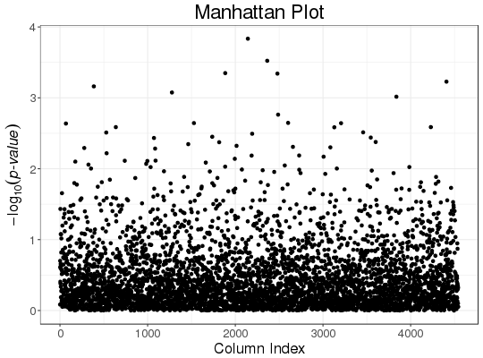
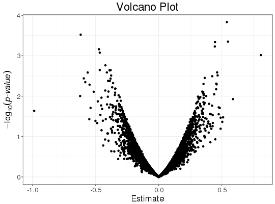

Slopes of column-wise logistic regressions of each column
of a big.matrix, with some other associated statistics.
Covariates can be added to correct for confounders.
big_univLogReg(X., y01.train, ind.train = rows_along(X.), ind.col = cols_along(X.), covar.train = NULL, ncores = 1, tol = 1e-08, maxiter = 20)
| X. | Either a big.matrix or a big.matrix.descriptor. |
|---|---|
| y01.train | Vector of responses, corresponding to |
| ind.train | An optional vector of the row indices that are used, for the training part. If not specified, all rows are used. Don't use negative indices. |
| ind.col | An optional vector of the column indices that are used. If not specified, all columns are used. Don't use negative indices. |
| covar.train | Matrix of covariables to be added in each model to correct
for confounders (e.g. the scores of PCA), corresponding to |
| ncores | Number of cores used. Default doesn't use parallelism. We advise you to use only half of the cores you have. |
| tol | Relative tolerance to assess convergence of the coefficient.
Default is |
| maxiter | Maximum number of iterations before giving up.
Default is |
A data.frame with 4 elements:
the slopes of each regression,
the standard errors of each slope,
the number of iteration for each slope. If is NA, this means that the
algorithm didn't converge, and glm was used instead.
the z-scores associated with each slope.
This is also an object of class mhtest. See methods(class = "mhtest").
If convergence is not reached by the main algorithm for some columns,
the corresponding niter element is set to NA and a message is given.
Then, glm is used instead for the corresponding column.
If it can't converge either, all corresponding estimations are set to NA.
set.seed(1) X.desc <- big_attachExtdata() n <- nrow(X.desc) y01 <- sample(0:1, size = n, replace = TRUE) covar <- matrix(rnorm(n * 3), n) X1 <- attach.BM(X.desc)[, 1] # only first column of the `big.matrix` # Without covar test <- big_univLogReg(X.desc, y01)#>## new class `mhtest` class(test)#> [1] "mhtest" "data.frame"attr(test, "transfo")#> function (x) .Primitive("abs")attr(test, "predict")#> function(xtr) { #> lpval <- stats::pnorm(xtr, lower.tail = FALSE, log.p = TRUE) #> (log(2) + lpval) / log(10) #> } #> <environment: 0xb31b3b8>## plot results plot(test)plot(test, type = "Volcano")## To get p-values associated with the test test$p.value <- predict(test, log10 = FALSE) str(test)#> Classes ‘mhtest’ and 'data.frame': 4542 obs. of 5 variables: #> $ estim : num 0.0288 -0.1992 -0.1646 0.1359 -0.2578 ... #> $ std.err: num 0.13 0.155 0.141 0.159 0.124 ... #> $ niter : int 3 4 4 4 4 4 4 4 4 4 ... #> $ score : num 0.221 -1.284 -1.169 0.854 -2.087 ... #> $ p.value: num 0.8249 0.1992 0.2424 0.3929 0.0369 ... #> - attr(*, "transfo")=function (x) #> - attr(*, "predict")=function (xtr) #> ..- attr(*, "srcref")=Class 'srcref' atomic [1:8] 100 15 103 3 15 3 100 103 #> .. .. ..- attr(*, "srcfile")=Classes 'srcfilecopy', 'srcfile' <environment: 0x39e2630>summary(glm(y01 ~ X1, family = "binomial"))$coefficients[2, ]#> Estimate Std. Error z value Pr(>|z|) #> 0.02878213 0.13006503 0.22129029 0.82486641# With all data str(big_univLogReg(X.desc, y01, covar.train = covar))#> Classes ‘mhtest’ and 'data.frame': 4542 obs. of 4 variables: #> $ estim : num 0.0301 -0.1839 -0.1509 0.1705 -0.2639 ... #> $ std.err: num 0.132 0.156 0.142 0.161 0.124 ... #> $ niter : int 3 4 4 4 4 4 4 4 4 4 ... #> $ score : num 0.227 -1.178 -1.063 1.058 -2.121 ... #> - attr(*, "transfo")=function (x) #> - attr(*, "predict")=function (xtr) #> ..- attr(*, "srcref")=Class 'srcref' atomic [1:8] 100 15 103 3 15 3 100 103 #> .. .. ..- attr(*, "srcfile")=Classes 'srcfilecopy', 'srcfile' <environment: 0x39e2630>summary(glm(y01 ~ X1 + covar, family = "binomial"))$coefficients[2, ]#> Estimate Std. Error z value Pr(>|z|) #> 0.03005979 0.13238497 0.22706347 0.82037439# With only half of the data ind.train <- sort(sample(n, n/2)) str(big_univLogReg(X.desc, y01[ind.train], covar.train = covar[ind.train, ], ind.train = ind.train))#> Classes ‘mhtest’ and 'data.frame': 4542 obs. of 4 variables: #> $ estim : num 0.192 -0.157 -0.172 0.331 -0.085 ... #> $ std.err: num 0.194 0.226 0.195 0.232 0.178 ... #> $ niter : int 4 4 4 4 4 4 4 4 4 4 ... #> $ score : num 0.99 -0.695 -0.885 1.43 -0.479 ... #> - attr(*, "transfo")=function (x) #> - attr(*, "predict")=function (xtr) #> ..- attr(*, "srcref")=Class 'srcref' atomic [1:8] 100 15 103 3 15 3 100 103 #> .. .. ..- attr(*, "srcfile")=Classes 'srcfilecopy', 'srcfile' <environment: 0x39e2630>summary(glm(y01 ~ X1 + covar, family = "binomial", subset = ind.train))$coefficients[2, ]#> Estimate Std. Error z value Pr(>|z|) #> 0.1916492 0.1936454 0.9896917 0.3223248